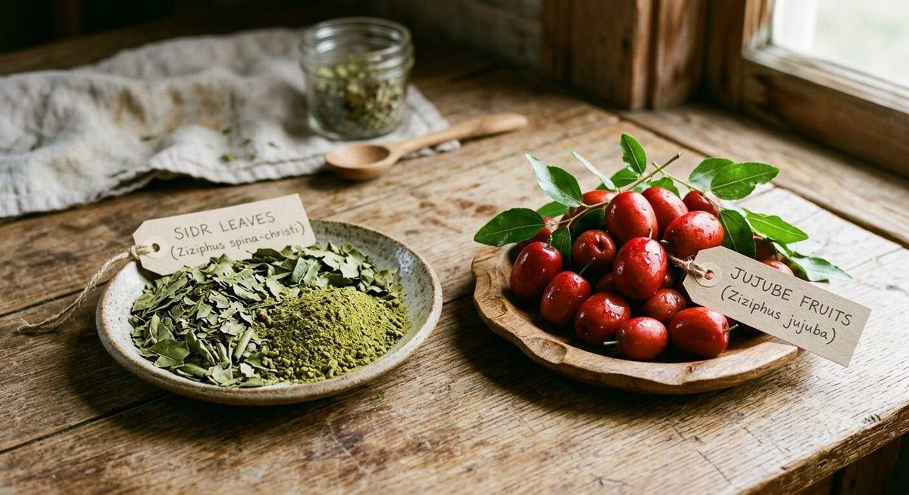
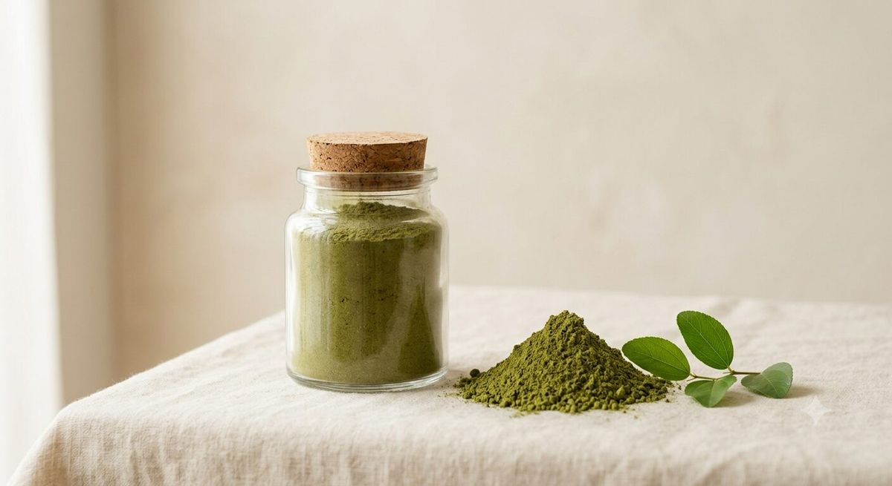
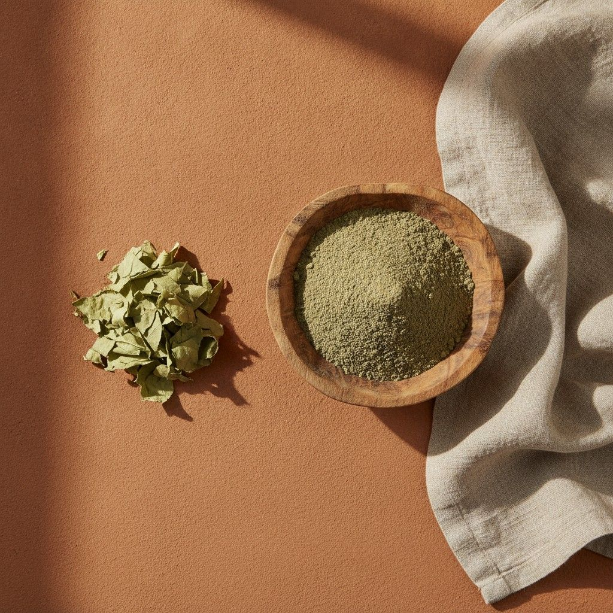
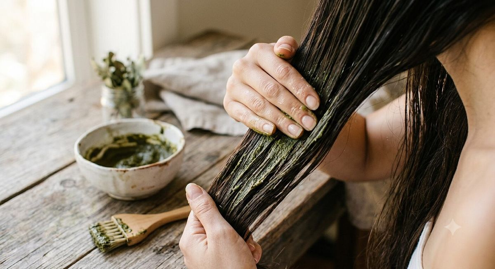
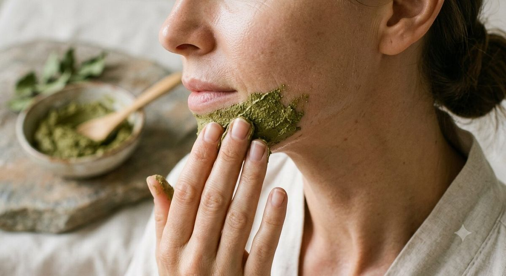
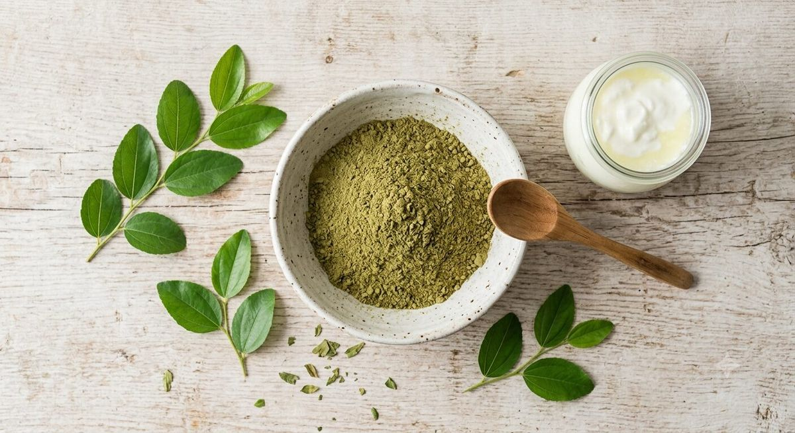
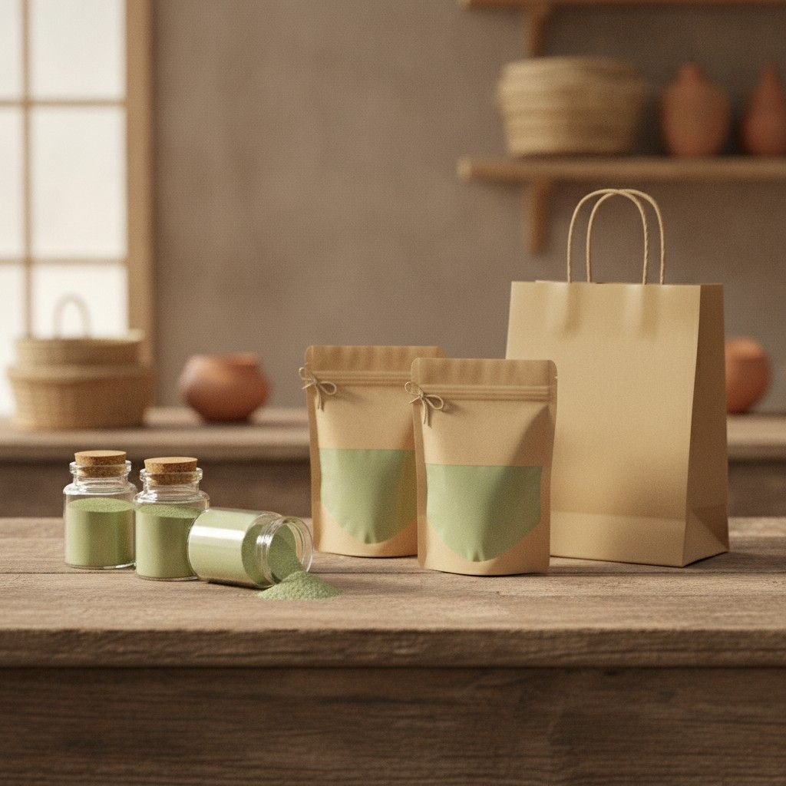

Sidr et jujubier : est-ce vraiment la même plante ? Le guide des espèces Ziziphus
« Sidr », « jujubier », « nabk », « ber »… derrière ces noms se cachent plusieurs espèces bien distinctes du genre Ziziphus. On démêle la confusion, sources scientifiques à l'appui.
Lire l'article →
Sidr : toutes les réponses à vos questions
Utilisation, fréquence, mélanges, contre-indications, roqya, ghusl… nos réponses claires et sourcées aux questions les plus posées sur le sidr.
Lire l'article →Tous les articles
Le miel de sidr : quand le jujubier donne bien plus que ses feuilles
Nectar rare des fleurs du jujubier, à ne pas confondre avec la poudre de feuilles cosmétique : origine, rareté et ce que disent vraiment les études.
Lire l'article →Le sidr dans le Coran et l'islam : la Sidrat al-Muntaha et les usages religieux
Quatre mentions coraniques, la Sidrat al-Muntaha du voyage nocturne, le hadith sur la coupe du lotier : ce que disent le Coran et la Sunna, sourcé et expliqué.
Lire l'article →
Interview : Khuwaylid, fondateur de La Maison du Jujubier
Son déclic personnel avec le sidr lors d'un voyage en Malaisie, la filière marocaine d'Agadir, et sa conviction qu'un produit brut reste le plus efficace.
Lire l'article →Le jujubier (Sidr) : origine, histoire et symbolique d'un arbre sacré
De l'Égypte ancienne au Coran, en passant par les arbres millénaires du désert du Néguev : l'histoire fascinante de Ziziphus spina-christi.
Lire l'article →
Feuilles de sidr pour les cheveux : bienfaits, actifs et mode d'emploi
Saponines, mucilages, flavonoïdes : que disent réellement les études sur le pouvoir nettoyant et fortifiant du sidr pour le cuir chevelu ?
Lire l'article →
Feuilles de sidr pour la peau : bienfaits, précautions et usages traditionnels
Nettoyant, apaisant, antibactérien : le point sur les propriétés cutanées des feuilles de sidr, entre pharmacopée ancienne et recherche récente.
Lire l'article →Le sidr à travers le monde : rituels du Moyen-Orient à l'Afrique et l'Asie du Sud
Rituel funéraire islamique, tradition capillaire du Maghreb, pharmacopée ayurvédique en Inde : comment chaque culture s'est approprié le sidr.
Lire l'article →
5 recettes de masques maison à la poudre de sidr (cheveux et peau)
Masque nettoyant simple, duo sidr-henné, chantilly hydratante, soin apaisant pour la peau... nos recettes détaillées, pas à pas.
Lire l'article →
Où acheter de la poudre de sidr en France : 6 boutiques en ligne
Une liste pratique pour trouver où commander de la poudre de sidr, avec grammage et lien direct vers chaque boutique.
Lire l'article →